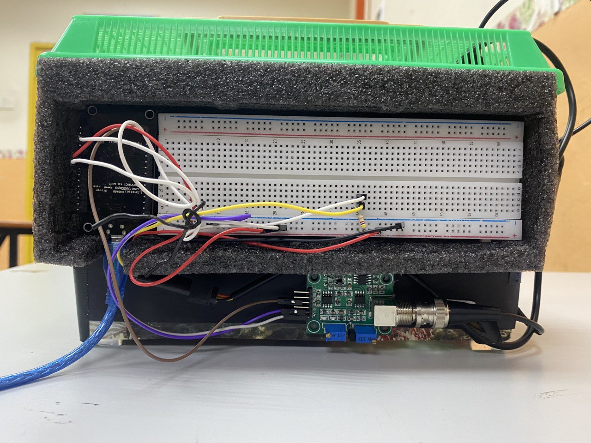
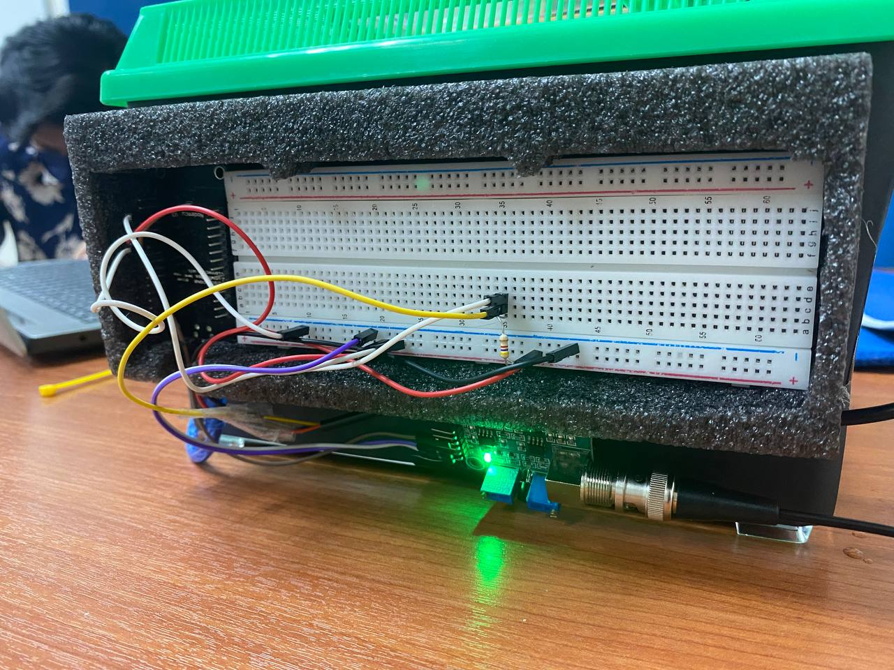
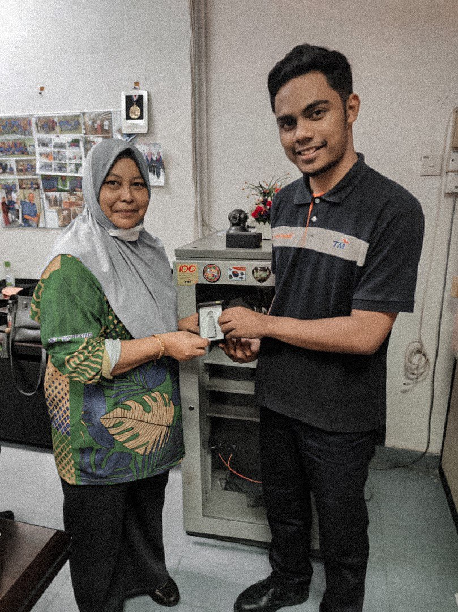
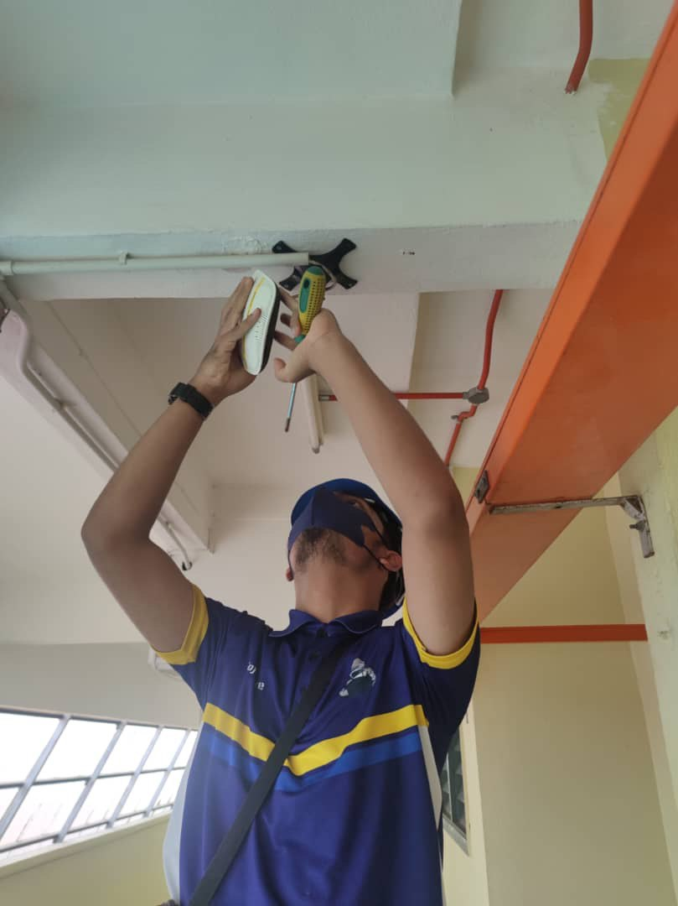
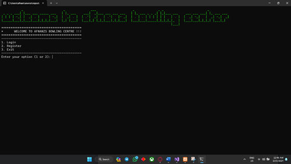

Personal Details
Academic History
Bachelor of Information Technology (Game Technology)
Institution: Universiti Teknikal Malaysia Melaka
Graduation Year: 2025
Description: Specialized in Games Technology
Diploma in Information Technology
Institution: Politeknik Tuanku Syed Sirajuddin
Graduation Year: 2022
Description: Focused on web development and database management.
High School
School: Sekolah Menengah Kebangsaan Bakar Arang
Graduation Year: 2018
Course: Accounting
Mid School
School: Sekolah Kebangsaan Bakar Arang
Graduation Year: 2013
Work Produced
Work Produced
Diploma Final Year Project
The final year project for my diploma involved designing and developing an Arduino-based water temperature detection system. This project aimed to create a cost-effective and efficient solution for monitoring water temperature in various settings, such as aquariums, swimming pools, and industrial applications.
The system utilized an Arduino microcontroller as the core component, interfaced with a temperature sensor to measure the water temperature accurately. The sensor data was processed by the Arduino, which then displayed the temperature on an LCD screen. Additionally, the system included an alert mechanism that triggered an alarm if the water temperature exceeded or fell below predefined thresholds, ensuring timely interventions.
The project involved multiple phases, including circuit design, component selection, programming the Arduino, and testing the system in real-world conditions. The final product was a reliable and user-friendly water temperature detection system that demonstrated my skills in embedded systems, sensor integration, and practical problem-solving.
 Work Produced
Diploma Internship TM
Internship Experience at TM: Navigating the Networking World My six-month internship at TM (Telekom Malaysia) within the Networking Department was an immersive journey into the intricate world of network management and optimization. This experience not only deepened my technical expertise but also honed my problem-solving abilities and communication skills.
Networking Infrastructure Development: One of my primary responsibilities was assisting in the setup and configuration of networking hardware. This included working on routers, switches, and access points, where I learned the nuances of creating robust network infrastructures. Collaborating with seasoned engineers, I ensured that these networks not only performed optimally but also upheld stringent security protocols.
Monitoring and Troubleshooting: Network monitoring became second nature as I delved into tools like Wireshark and SolarWinds. Identifying performance bottlenecks and swiftly troubleshooting network outages became routine tasks. These experiences taught me the importance of proactive monitoring and quick, effective problem resolution in maintaining seamless network operations.
 Work Produced
Degree
Building a Bowling Booking System with C++ Creating a bowling booking system using C++ was an exciting project that focused on simplifying the process of reserving bowling lanes for customers. The system included essential features such as user registration, lane availability checks, booking management, and payment processing.
